Rada
Pokud otestujete naši scénu, zjistíte, �e stùl a �idle se jeví jako "interaktivní" objekty. Pokud nad nì posunete ukazatel myši, zmìní se kurzor a zobrazí se jejich název. To proto, jeliko� entity tvoøící stùl a �idli mají vlastnost "Interactive" (Interaktivní) nastavenu na true (pravda). Ale co kdybychom chtìli jako interaktivní nastavit èást pozadí scény? Je nutné vytváøet entity pro ka�dı z pøedmìtù, kterı má bıt interaktivní? Odpovìï je ano i ne. SceneEdit vám umo�òuje vytvoøit takzvané "regionové entity". Chovají se pøesnì jako normální entity, ale nepotøebují �ádnou grafickou reprezentaci (tj. nemusíte pro nì malovat �ádnı obrázek). Místo toho jen pøedstavují urèitou oblast ve scénì.
Uèiníme pár dalších objektù interaktivními, jmenovitì to budou dveøe, skøíò a okno.
Otevøete soubor "MyScene.scene" ve SceneEditu.
Abyste pøidali regionovou entitu, kliknìte na tlaèítko "Add entity" (Pøidat entitu) a v menu vyberte polo�ku "Add region entity" (Pøidat regionovou entitu).
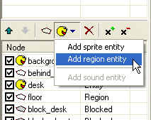
Bude vytvoøena nová entita. A teï u� je to jednoduché. Mù�ete mìnit jméno a titulek v oknì vlastností a dále mù�ete upravovat tvar regionové entity úplnì stejnì jako pøi editaci regionù normálních.
Pøidejte do scény tøi regionové entity: "door" (dveøe), "closet" (skøíò) a "window" (okno):
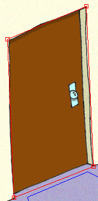 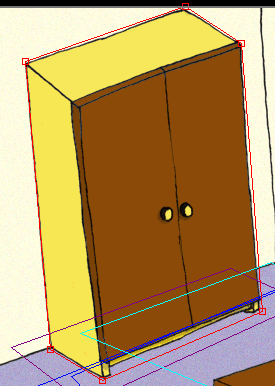 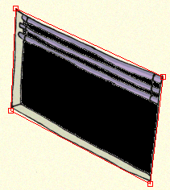
Je dùle�ité si opìt uvìdomit, �e poøadí entit a regionù je dùle�ité! U� jsme si øekli, proè je dùle�ité pro rozvr�ení scény, ale poøadí je také dùle�ité s ohledem na u�ivatelskou interakci. Kdy� herní engine zjiš�uje, nad jakım objektem je zrovna ukazatel myši, projí�dí postupnì všechny prvky scény odshora dolù.
V naší pokusné scénì sice na poøadí zase a� tak nezále�í, proto�e se navzájem nepøekrıvají, ale mìli byste na tohle v�dy pamatovat.
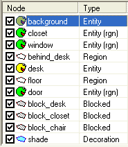
Pokud spustíte hru a vyzkoušíte scénu, dveøe, skøíò a okno u� by se mìly stát interaktivními.
Urèitì jste si všimli, �e pokud najedete myší na nìkterı interaktivní objekt,
zmìní se kurzor. Hra má dva pøeddefinované kurzory - standardní a aktivní
(lze je zmìnit ve vlastnostech hry v programu ProjectMan). Ale také mù�ete
nìkterım objektùm pøiøadit speciální kurzor. Øeknìme, �e chceme, aby kurzor
zmìnil tvar, pokud najedeme myší na dveøe. Je to velice jednoduché. Všechny
kurzory jsou vlastnì sprity a mù�ete je pøiøadit entitám pøímo ve SceneEditu.
Pøepnìte se do SceneEditu a vyberte entitu "door" (dveøe).
|
|
Chcete-li ve SceneEditu rychle vybrat nìjakı pøedmìt, double-clicknìte na nìj pøímo v náhledu scény. |
Podívejte se na okno vlastností entity a naleznete polo�ku "Cursor". Kliknìte na tlaèítku "..." vedle vlastnosti "Cursor" a SceneEdit vás nechá vybrat sprite, kterı bude ve høe pou�it jako kurzor pro tento objekt. V tomto vıukovém projektu u� je nìkolik kurzorù pøipraveno v adresáøi "data\sprite\system". Nalistujte tento adresáø, v nìm vyberte soubor "arrow_left.sprite" a kliknìte OK. Vlastnost "Cursor" se zmìní a nyní se odkazuje na vybranı soubor.
|
|
Pokud potøebujete odstranit vybranı kurzor, prostì opìt kliknìte na tlaèítko "..." a a� se zobrazí okno pro vıbìr souboru, stisknìte tlaèítko "Storno". SceneEdit se vás zeptá, zda máte v úmyslu odstranit aktuálnì vybranı soubor. |
Ulo�te scénu a spus�te hru. Pokud teï najedete myší nad dveøe, kurzor se zmìní na oran�ovou šipku.
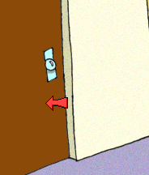
Objekty ve scénì se nyní jeví jako interaktivní, ale kdy� se na nì klikne, nic se nestane. Potøebujeme jim pøiøadit nìjakou logiku, a herní logika je reprezentována skripty. Skripty jsou textové soubory, obsahující jednoduchı program. Podrobnì jsou skripty popsány v jiné kapitole této dokumentace, zde probereme pouze základy.
Pøipojíme skript k entitì "desk", pøedstavující stùl. Nejjednodušší je pou�ít schopnost nástroje ProjectMan vytváøet nové soubory ze šablony. Tuto funkci u� jsme nìkolikrát pou�ili a úplnì stejnì funguje i pro skripty. Pøepnìte se do ProjectManu, najdìte adresáø "MyScene" a rozkliknìte jeho vìtev pomocí malého (+). Adresáø "MyScene" by mìl mít podadresáø, nazvanı "scr". Zde jsou ulo�eny skripty pro scénu. Kliknìte pravım tlaèítkem myši na adresáøi "scr" a v menu vyberte pøíkaz "Add script" (Pøidat skript).
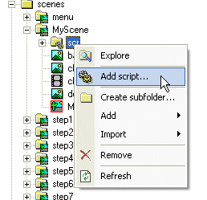
Objeví se okno pro vıbìr šablony. Zde vyberte vlevo "scene object", vpravo zmìòte jméno na "desk" (stùl) a kliknìte na OK. V adresáøi "scr" bude vytvoøen novı skript s názvem "desk".
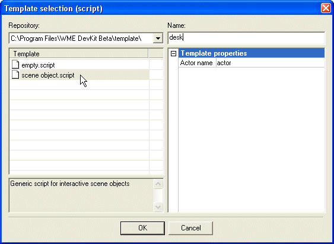
Otevøete soubor "MyScene.scene" ve SceneEditu. Chceme modifikovat entitu "desk", tak�e ji vyberte. Mù�ete buïto vybrat polo�ku "desk" vlevo v seznamu prvkù, nebo double-clicknout stùl v náhledu vpravo. Podívejme se na okno vlastností, je zde tlaèítko "Scripts..." (Skripty). Zmáèknìte jej a objeví se okno pro pøipojení skriptù. V tomto oknì mù�ete k objektu pøipojit jeden nebo více skriptù. Stisknìte tlaèítko "Add script" (Pøidat skript). V novìjších verzích WME se toto tlaèítko jmenuje "Attach existing script" (Pøipojit existující skript).
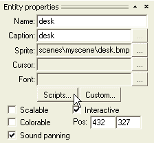 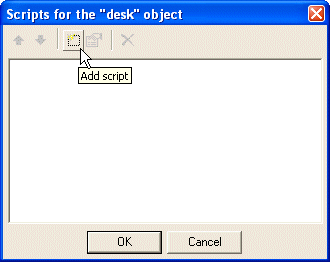
SceneEdit vás nechá vybrat soubor se skriptem, kterı chcete pøipojit. Najdìte a vyberte náš "desk.script" a kliknìte OK.
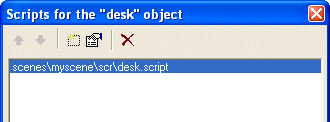
Nyní budeme skript opravovat. Mù�ete jej otevøít v editoru buïto stisknutím tlaèítka "Edit script" (Opravit skript) nebo double-clickem na jménu skriptu. SceneEdit otevøe skript v pøiøazeném textovém editoru (vıchozí nastavení je program "Poznámkovı blok" ze systému Windows, pøeètìte si více o nastavení textového editoru pro editaci skriptù).
|
|
Pokud objekt doposud nemìl pøipojen �ádnı skript, SceneEdit ihned po kliknutí na tlaèítko "Scripts..." zobrazí okno pro vytvoøení nového skriptu. Není tøeba jej vytváøet prostøednictvím ProjectManu, jak je popsáno vıše. |
Novı skript by mìl vypadat nìjak takhle:
#include "scripts\base.inc"
////////////////////////////////////////////////////////////////////////////////
on "LookAt"
{
GoToObject();
actor.Talk("Blah");
}
////////////////////////////////////////////////////////////////////////////////
on "Take"
{
GoToObject();
actor.Talk("Blah");
}
.
.
.
////////////////////////////////////////////////////////////////////////////////
function GoToObject()
{
actor.GoTo(200, 200);
actor.TurnTo(DI_UP);
}
|
Bloky "on "xxx" {}" jsou takzvané "obsluhy událostí" (event handlers). Tyto bloky jsou provedeny tehdy, pokud je v objektu vyvolána nìjaká událost. Napøíklad pokud hráè otevøe nad stolem menu a vybere ikonu lupy, v objektu stùl je vyvolána událost "LookAt" (podívat se na) a je spuštìn patøiènı blok kódu. Existují dva druhy událostí. Jednak jsou to vysokoúrovòové, jako "LookAt" (podívat se na) nebo "Talk" (promluvit na), které jsou plnì v re�ii vıvojáøe. Mù�e definovat události s jakımkoliv jménem. Druhou skupinou jsou nízkoúrovòové události, jako napøíklad "LeftClick" (levé kliknutí). Tyto nízkoúrovòové události vyvolává sám herní engine a jejich jména jsou pevnì daná a dokumentovaná v této pøíruèce.
Podívejme se na obsluhu události "LookAt" (podívat se na):
GoToObject();
actor.Talk("Blah");
|
Tento kousek kódu øíká hernímu engine, �e má zavolat funkci "GoToObject" (jdi k objektu) a poté má postava øíct "Blah" (actor = postava, Talk = mluvit). Funkce GoToObject byla pro vaše pohodlí u� pøedgenerována a vypadá takto:
function GoToObject()
{
actor.GoTo(200, 200);
actor.TurnTo(DI_UP);
}
|
Tato funkce vykonává následující: postava dojde na pozici 200, 200 ve scénì a otoèí se nahoru (GoTo = jdi na, TurnTo = otoèit se, Up = nahoru).
Modifikujeme tento skript, abychom dosáhli následujícího: Kdy� hráè pou�ije ikonu lupy na stùl (a tedy v nìm vyvolá událost "LookAt"), postava dojde ke stolu, otoèí se k nìmu a øekne "Je to tì�kı dubovı stùl."
Poslední èást zvládneme snadno, prostì pøepíšeme øetìzec "Blah". Obsluha události "LookAt" teï vypadá takto:
on "LookAt"
{
GoToObject();
actor.Talk("Je to tì�kı dubovı stùl.");
}
|
Teï musíme zmìnit funkci GoToObject tak, aby postava došla na správnou pozici ve scénì. Ale jak zjistíme správnou pozici? Mno, nejjednodušší je opìt pou�ít nástroj pro umístìní postavy (je popsán v kroku 6 této vıuky). Vra�te se zpátky do SceneEditu a zavøete okno se skripty (kliknìte Ok). Stisknìte tlaèítko "Place actor" (Umístit postavu) a vyberte soubor molly.actor. Nyní nastavte postavu do takové pozice, v jaké by mìla stát pøi prohlí�ení stolu (pamatujte: postavou pohybujete myší, pravım tlaèítkem mìníte její natoèení a levım tlaèítkem ji umístíte na trvalo).
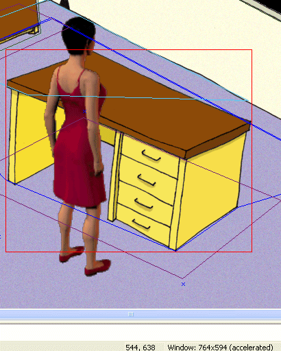
Dobøe, teï máme postavu na správném místì, ale jak tu pozici dostaneme do skriptu? Pou�ijte v menu funkci "Actor->Copy actor placement" (Postava->Kopírovat umístìní postavy) a nebo prostì stisknìte obvyklou klávesovou kombinaci Ctrl+C.
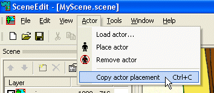
Do schránky systému Windows bude zkopírován následující fragment kódu:
actor.GoTo(544, 638); actor.TurnTo(DI_UPRIGHT); |
Tento kód pøedstavuje umístìní postavy, které jsme právì nastavili ve SceneEditu. Jediné co teï musíme udìlat je vlo�it tento kód do funkce GoToObject v našem "skriptu desk.script". Funkce pak bude vypadat takto:
function GoToObject()
{
actor.GoTo(544, 638);
actor.TurnTo(DI_UPRIGHT);
}
|
Také mù�ete zmìnit obsluhu události "Take" (vzít). Postava by mohla prohlásit nìco rádoby vtipného, kdy� se hráè pokusí sebrat stùl.
on "Take"
{
GoToObject();
actor.Talk("Ten stùl je pro mou malièkost trochu moc tì�kı...");
}
|
Jeliko� se stolem se nedá mluvit, mù�ete obsluhu události "Talk" úplnì vymazat. Kdy� není �ádná speciální obsluha nalezena, pou�ije se základní.
Obsluha události "LeftClick" jednoduše zavolá funkci GoToObject. To znamená, �e pokud hráè klikne na stùl, postava k nìmu dojde.
Tímto je náš jednoduchı skript hotov. Ulo�te jej, ulo�te scénu, ukonèete SceneEdit a pøepnìte se zpìt do ProjectManu.
Spus�te hru a otestujte scénu. Kliknìte pravım tlaèítkem na stùl a objeví se menu. Zkoušejte rùzné ikony. Postava by mìla dojít ke stolu, otoèit se k nìmu a øíct patøiènou vìtu.
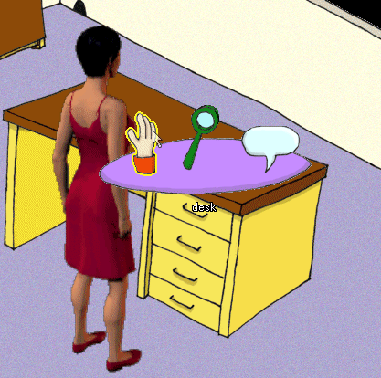
Ostatním objektùm ve scénì lze pøiøazovat skripty úplnì stejnım zpùsobem. Pro inspiraci se mù�ete podívat na skripty v dokonèené scénì "step7.scene".
Fajn, dost programování. Teï se pøesuneme k dalšímu kroku této vıuky, Krok 8: Vrstvy scény.